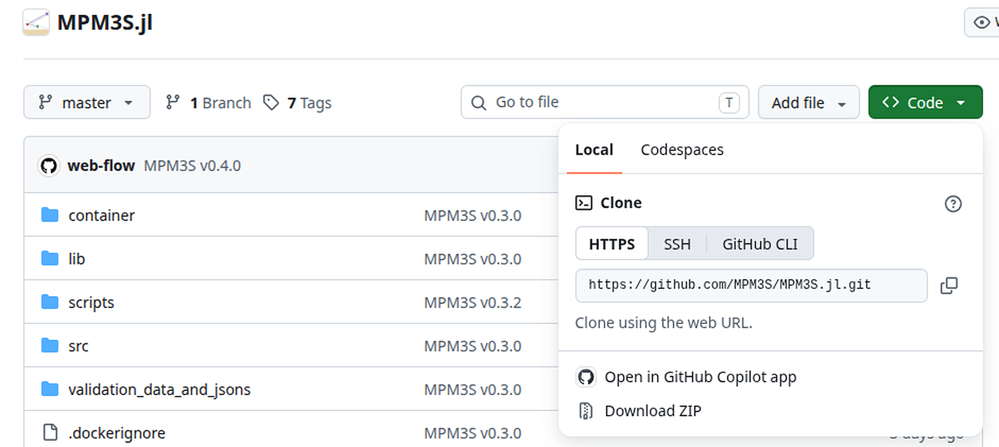

Julia (PC)¶
The simplest deployment is to install Julia and run MPM3S from source. Julia and MPM3S are both operated through the command/terminal window. This page is for your own computer; to install on an HPC and run as Slurm batch jobs, see HPC installed with Julia.
Add your GitHub account to your computer (while MPM3S.jl is private)
MPM3S.jl is private for now, so downloading it needs a GitHub account with access to MPM3S.jl, and a token to use in place of your GitHub password. This note disappears when MPM3S.jl is made public. To make the token:
- On GitHub, go to Settings → Developer settings → Personal access tokens → Tokens (classic) and click Generate new token (classic).
- Tick
repoandread:packages, choose an expiry date and generate the token. - Copy the token and keep it as safe as a password: GitHub shows it only once.
On your computer, git clone uses the token: when it asks for your GitHub username and password, give the token as the password. On Windows, Git may instead open a window to sign in to GitHub in your browser. On Linux, run git config --global credential.helper store once before cloning to have git remember the token; Windows and macOS remember it for you. Downloading the ZIP from the GitHub website needs no token, only signing in there.
Command/terminal window¶
Julia, MPM3S and the containers are all operated through the terminal (macOS/Linux) or command (Windows) window. To open one:
Press the Windows key, type PowerShell and select Windows PowerShell.
- To open it in a particular folder, open the folder in File Explorer, right-click an empty space and choose Open in Terminal (Windows 11), or hold
Shiftwhile right-clicking and choose Open PowerShell window here (Windows 10).
Press Ctrl + Alt + T, or search for Terminal in your applications menu.
- To open it in a particular folder, right-click an empty space in the folder in your file manager and choose Open in Terminal.
Press Cmd + Space, type Terminal and press Return. Terminal is also in Applications → Utilities.
- To open it in a particular folder, right-click the folder in Finder and choose Services → New Terminal at Folder.
Code snippets are provided throughout the documentation, these can be copied and pasted into the Terminal/Command window.
Julia installation¶
Install Julia with the juliaup toolchain manager, as recommended at julialang.org/downloads, by running the command for your system in the command/terminal window:
- Alternatively, install Julia from the Microsoft Store, or use the
.exeinstaller from julialang.org/downloads.
Close and reopen the window, then verify the install with julia --version.
Downloading MPM3S from GitHub¶
Released versions of MPM3S are published at github.com/MPM3S/MPM3S.jl, which always holds the latest release.
Use git clone to pull the code from GitHub into an MPM3S folder in your current directory:
Go to github.com/MPM3S/MPM3S.jl, use the green Code button and choose Download ZIP:

Unzip it wherever you want to keep it and rename the folder to MPM3S.
Rename the folder to MPM3S
The ZIP from GitHub unpacks to a folder called MPM3S.jl-master, and git clone without the trailing MPM3S makes one called MPM3S.jl. Rename it to MPM3S so that it matches the folder names used in the commands on these pages.
Both methods produce an MPM3S folder containing the Julia code.
Updating to a new release. Each release is added on top of the previous one and tagged (v0.2.5, …). If you cloned with git, run git pull inside the MPM3S folder; a copy cloned before v0.2.4 needs cloning again once. Otherwise, download the ZIP again into a fresh folder. Keep your own input files outside the MPM3S folder, so an update never clashes with them.
MPM3S installation¶
1. Download the code from GitHub, as described above.
2. Start Julia and install the MPM3S package. Open a PowerShell (Windows) or terminal (Linux/macOS) window and start Julia with:
-t 4 sets the number of CPU threads. Four threads is sufficient when the analysis is on a GPU; for a CPU run, set the number of threads to the number of physical cores minus 2. Julia runs on one thread if -t is omitted.
In the Julia REPL, change directory to MPM3S and install the MPM3S package. This installs the exact dependencies recorded in Manifest.toml:
julia> cd("path/to/MPM3S")
julia> using Pkg;
julia> Pkg.activate(".")
julia> Pkg.instantiate()
julia> using MPM3S
If everything succeeds the REPL prints the package versions being resolved.
3. Run a problem. Step 2 left Julia in the MPM3S folder with MPM3S loaded, and MPM3S is always run from there: every path is relative to the MPM3S folder. The tutorial input files are in validation_data_and_jsons, so Tutorial 1, for example, is run with:
- The path to the input file is relative to the
MPM3Sfolder. - The semicolon stops the REPL printing the material-point data that is returned.
- The input file must have
"GPU": "off".
- The path to the input file is relative to the
MPM3Sfolder; Tutorial 3's input file has"GPU": "on". - The semicolon stops the REPL printing the material-point data that is returned.
- The input file must have
"GPU": "on", and the machine needs an NVIDIA GPU with CUDA.
This steps through the load increments set in the input file and writes the .vtu, .vtk and .csv output files to the MPM3S folder. To run your own problem, put its input file in a folder inside MPM3S, for example my_runs/input_data.json, and give that path: MPM3S.non_linear_solve("my_runs/input_data.json").
Important
The paths to any .stl files in input_data.json are relative to the input file, not to the folder Julia is running in. The simplest set-up is to keep the .stl files in the same folder as input_data.json.
Open the VTU/VTK files in ParaView (or VisIt) to inspect the deformed mesh and the stress / displacement fields.